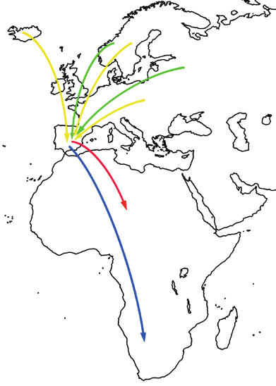

Investiga por qué los huevos de una rana se han de depositar en el agua y los de una tortuga no. Indica las fuentes consultadas.
Elabora una relación de las semejanzas y las diferencias entre una anguila y una serpiente.
Investiga y elabora una presentación con el significado de las diferentes especializaciones alimentarias de las aves: granívora, insectívora, frugívora, nectarívora, piscívora y filtradora. Pon ejemplos y cita las fuentes consultadas.
Movimientos migratorios

Rutas de migración de Europa a África
Observa este mapa sobre los movimientos migratorios de cuatro aves en otoño. Luego, responde a las preguntas, teniendo en cuenta que, al final del invierno o comienzo de la primavera, el sentido de las flechas es el contrario.
¿Qué puedes decir sobre la localización geográfica de las áreas de invernada y las de cría de estas aves?
¿Por qué no es al revés?
Investiga qué aves migratorias puedes observar en tu comunidad autónoma. Prepara una infografía sobre una de ellas para explicar sus características, hábitos y rutas migratorias al resto de la clase.
Adaptaciones de los picos
Indica qué adaptaciones presentan los picos de estas aves.
El sentido de la vista está muy desarrollado en las aves. Defiende con ejemplos la razón de esta afirmación.
Investiga sobre las egagrópilas y responde a las cuestiones:
¿Qué son?
¿Dónde se suelen encontrar?
¿Para qué crees que las utilizan los científicos y científicas?
Observa esta imagen de una mandíbula inferior. ¿Pertenece a un animal carnívoro o herbívoro? Busca información y justifica tu respuesta.
Hallazgo fósil
En la segunda mitad del siglo XIX se encontró en Alemania un fósil con aspecto de reptil. Tenía columna vertebral, una larga cola, dientes incrustados en las mandíbulas y dedos con uñas. Pero, además, presentaba plumas, por lo que se le dio el nombre de Archaeopteryx, que quiere decir 'antigua ala'. Teniendo en cuenta que los fósiles de reptiles son más antiguos que los de las aves, plantea una hipótesis sobre la importancia de este hallazgo.
Ventajas del desarrollo embrionario
Explica las ventajas que presenta el desarrollo embrionario de los mamíferos placentarios respecto al de los animales ovíparos.
Diagrama de barras
Construye un diagrama de barras sirviéndote de los datos de esta tabla sobre el número aproximado de especies conocidas de vertebrados. Después, responde a las preguntas.
Vertebrados
Número de especies
Peces
21,000
Anfibios
4,000
Reptiles
7,000
Aves
9,000
Mamíferos
4,000
Preguntas
¿Qué grupo presenta mayor diversidad?
¿Y menor diversidad?
Calcula cuál es el porcentaje de cada grupo respecto al total de animales vertebrados.